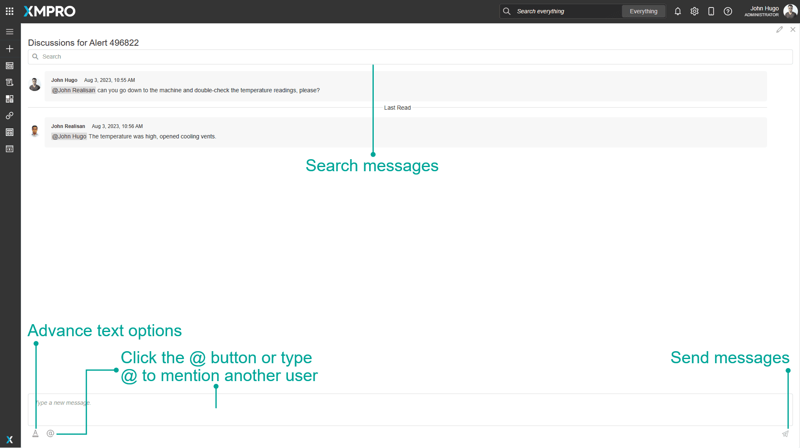

Alert Discussion
The Alert Discussion is an area in which messages can be posted to collaborate with members of your team about an Alert. Messages can be sent or read by anyone who has access to the Recommendation Alert.
Messages are displayed with the latest message at the bottom of the list. Any messages which have not been read since the last time you visited the page will be below the "Last Read" line break.
You can search for messages that contain a certain word or phrase by typing in the search bar at the top.
You can add a message by typing in the editor at the bottom of the discussion section and clicking the button with a paper plane icon at the bottom right corner.
Advanced text editing can be opened by clicking the button with an underlined letter A icon at the bottom left corner.
You can mention another user by typing the @ symbol or clicking the button with the @ symbol, which will pop up a list of users. Clicking on a user will mention them in the message and send them a notification email when the message is sent.
 Fig 1: Discussion functionality.
Summary
Although each discussion is specific to a particular Recommendation Alert, you have the option to include a summary at the top for easy navigation to all alert discussions related to a specific Identifier.
Alert discussions most recently contributed to will appear at the top. At runtime, you can sort by a different column, add a filter, or use the column chooser to change the columns displayed.
The discussions on archived alerts are hidden by default. Tick Show Archived to see all alert discussions, for this entity, to which you have access.
*Fig 2: Summary navigation.*Alert Discussion Properties
Behavior
Type
The Identifier options are Asset, Process, KPI, Work Order, Work Request, Entity, and None (default).
ID
Supply an Identifier to show a filtered summary grid of Alerts that match the given Identifier. It is required when Type is not None.
Alert ID
The Alert ID is optional. Supply a value to default the alert discussion displayed when the Page is opened.
Note
If an ID is provided without an Alert ID, the bottom of the block will be empty when the Page is opened. In this case, the user should select a Recommendation Alert from the grid to see its alert discussion.
Action
Configure actions to be triggered when the user clicks the Alert ID of a row in the summary grid. For example, enable the user to navigate to the alert page.
For detailed instructions see the Common Properties article for more details
Last modified: August 20, 2025